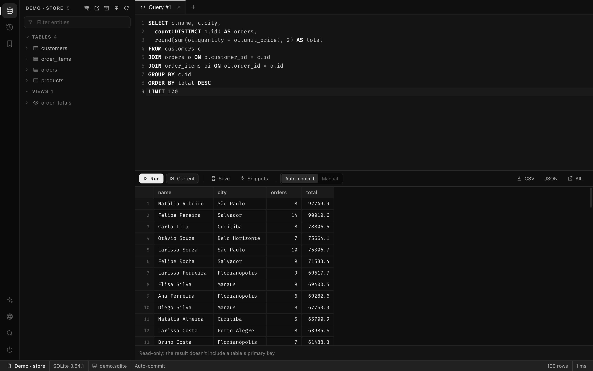
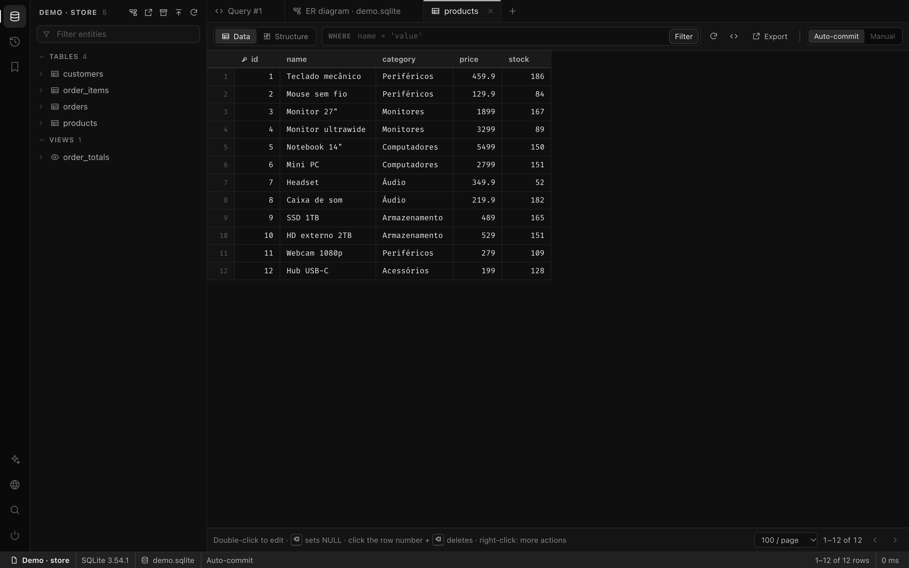
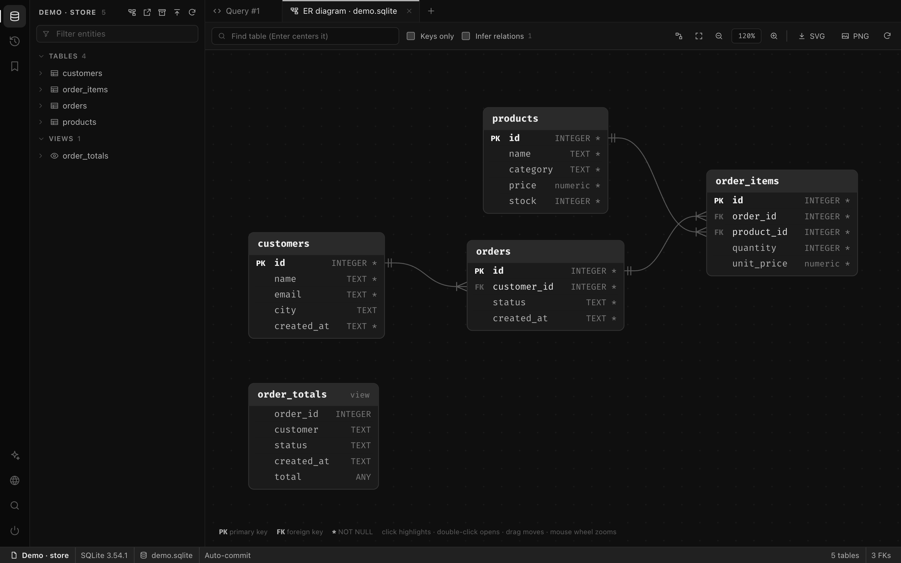
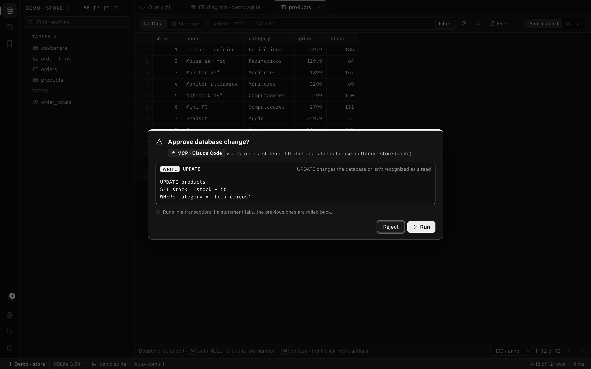

24 databases, one app
Relational, analytics, cloud warehouses and NoSQL, with saved connections, passwords encrypted by your OS keychain, and a demo database to try things — in English, Português or Español.
Query, edit and explore PostgreSQL, MySQL, MongoDB, Redis, DynamoDB and 19 more databases
SQL, NoSQL and cloud warehouses, side by side in one free desktop app. Bring your own AI — a built-in assistant and an MCP server for Claude Code, Cursor and friends — and nothing gets written without your OK.
macOS · Windows · Linux (.deb, .rpm, Arch, AppImage) · Free, no account, no telemetry · MIT




Built to be quick with the keyboard and careful with your data.
Relational, analytics, cloud warehouses and NoSQL, with saved connections, passwords encrypted by your OS keychain, and a demo database to try things — in English, Português or Español.
Autocomplete for tables and columns, run everything or just the statement under the cursor, several results per run with a row limit you pick in the status bar, and snippets like sel, ij or ups.
Open as many connections as you need, each in its own tab, and put two next to each other to compare. Each keeps its own tabs, results and transaction.
Double-click to edit, set NULL, delete rows, then apply it all at once — all or nothing. Tables, query results, MongoDB, Redis, Cassandra, DynamoDB and SurrealDB.
Right-click a table for SELECT with JOINs that follow the foreign keys, INSERT, UPDATE or DELETE — ready to fill in.
Automatic layout, inferred relations when the database has no foreign keys, search, keys-only view, SVG and PNG export.
.sql and .sql.gz backups without pg_dump or mysqldump, streamed restore, and exports to CSV, JSON or INSERTs with no row limit.
Auto-commit or manual mode per connection with commit and rollback. On PostgreSQL each statement gets a savepoint, so one error doesn't sink the transaction.
SSH tunnels through a bastion, TLS that verifies the server's certificate by default, your own CA, and client certificates for mutual TLS. Passwords and keys stay encrypted on your machine.
Group connections, saved queries, snippets and open tabs per project, and sync them through a private repository of yours — readable files, one commit per sync. Passwords never leave your machine.
Import from DBeaver, DataGrip, TablePlus, Beekeeper Studio, pgAdmin, Navicat, MySQL Workbench, HeidiSQL and 5 more. Saved passwords come along when the tool keeps them in its own files.
Tabs come back when you reconnect, even on another computer. Your own snippets expand in the editor. And the app updates itself, checked against GitHub's SHA-256.
Each one with its own query language, catalog and quirks — tested against real servers, except the ones marked beta.
All editable in the grid, with key columns locked. Queries use each database's own language.
AI, on your terms
Use the built-in assistant with the Anthropic API or any OpenAI-compatible provider — including local models with Ollama or LM Studio — or let Claude Code, Cursor, VS Code and Claude Desktop use your connections through MCP.

Turn on the MCP server in AI and agents → External agents and copy the command for your client. Graphite shows the exact config with your token.
$ claude mcp add --transport http graphite \
http://127.0.0.1:7329/mcp \
--header "Authorization: Bearer <token>"Benchmark
The free versions of the database clients people use most, side by side — including where Graphite falls short.
| Free version | Graphite | DBeaver CE | DataGrip | TablePlus | Beekeeper Studio | pgAdmin 4 | Navicat | DbGate |
|---|---|---|---|---|---|---|---|---|
| Price | Free | Free · PRO from $113/yr | Free for non-commercial use · $109/yr | Free with limits (2 tabs) · from $99 | Free · paid from $9/mo | Free | Lite free · Premium $749.99/yr | Free · Premium $120/yr |
| Open source | MIT | Apache-2.0 | No | No | GPL-3.0 (Community) | PostgreSQL License | No | GPL-3.0 |
| Platforms | macOS · Windows · Linux | macOS · Windows · Linux | macOS · Windows · Linux | macOS · Windows · Linux | macOS · Windows · Linux | macOS · Windows · Linux | macOS · Windows · Linux | macOS · Windows · Linux |
| MongoDB and Redis, free | Yes | PRO only | Yes | Yes | Redis; MongoDB paid | No | Yes | Yes |
| Snowflake and BigQuery, free | Yes | Yes | Yes | Yes | BigQuery; Snowflake paid | No | Snowflake | No |
| DynamoDB, SurrealDB, Turso, free | Yes | Turso | DynamoDB | DynamoDB, Turso | Paid | No | No | Paid |
| Built-in AI with your own key or a local model, free | Yes | OpenAI or Copilot; others PRO | Yes | ✓ ¹ | Paid | ✓ off by default | Paid | Paid |
| MCP server for agents (Claude Code, Cursor…) | Yes | PRO only | Yes | ✓ ¹ | No | No | No | Read-only |
| Several connections at once, side by side | Yes | Yes | Yes | Side by side only in separate windows | One connection per window | Yes | Side by side only in separate windows | Side by side in Premium only |
| Sync connections and saved queries | Your private GitHub repo, free | Git in Enterprise and Ultimate | Project files in your VCS | Connections via iCloud or Dropbox | Cloud workspaces, paid | No | Navicat Cloud | Cloud, 5 free connections |
| Import connections from other tools | 13 tools | 6 tools | No | No | No | No | No | No |
| ER diagrams, free | Yes | Yes | Yes | Yes | Paid | Yes | Premium only | Yes |
| Backup and restore | Built in, no pg_dump needed | Via pg_dump / mysqldump | Via external tools | Yes | Paid | Yes | Premium only | Partly |
| macOS download (Apple Silicon) | 173 MB | 124 MB | 1.18 GB | 165 MB | 378 MB | 234 MB | 331 MB | 202 MB |
macOS, Apple Silicon, latest release of each. Smaller is better.
Checked on 23 November 2026 against each vendor's own site, pricing page, docs and releases. ✓ means included in the free version; — means not offered, or not found in the vendor's docs. Prices in US dollars, lowest paid tier. ¹ TablePlus doesn't say whether AI and MCP work in its free version. Something out of date? Open an issue.
Free, no account, no telemetry.
Apple Silicon (M1 and newer) or Intel.
The app isn't notarized by Apple yet. Open System Settings → Privacy & Security and click “Open Anyway”, or run:
xattr -dr com.apple.quarantine /Applications/Graphite.appWindows 10 or 11, x64. The installer needs no admin rights and keeps the app up to date; or use the portable zip.
The installer isn't code-signed yet, so SmartScreen asks first. Click “More info”, then “Run anyway”.
x64. The packages set up the menu entry and the graphite command; the AppImage runs on any distribution.
sudo apt install ./graphite_*_amd64.deb
sudo dnf install ./graphite-*.x86_64.rpm
sudo pacman -U ./graphite-dbclient-*-x86_64.pacmanFrom source · Node.js 22+: git clone https://github.com/julioczn/graphite && cd graphite && npm install && npm start
Install once, it keeps itself up to date. Graphite notices new releases, shows what changed, downloads the right package, verifies it against GitHub's SHA-256 and restarts on the new version. From 0.9.0 on; you can turn the check off.
Yes. Graphite is free and open source under the MIT license: no account, no ads, no telemetry and no paid tier.
24: PostgreSQL, MySQL, MariaDB, SQLite, SQL Server, Oracle, CockroachDB, TiDB, Firebird, GreengageDB, libSQL / Turso, ClickHouse, DuckDB, Trino, StarRocks, Snowflake, BigQuery, Amazon Redshift, MongoDB, Redis / Valkey, Apache Cassandra, ScyllaDB, Amazon DynamoDB and SurrealDB.
Yes. macOS on Apple Silicon and Intel; Windows 10 and 11, with an installer or a portable zip; and Linux, with packages for Debian and Ubuntu (.deb), Fedora, RHEL and Rocky (.rpm), Arch, and a portable AppImage.
It covers the same daily work (browsing, querying, editing rows in the grid, ER diagrams, backup and export) for SQL and NoSQL databases in one app. It also imports your saved connections from 13 tools, including DBeaver, DataGrip, Beekeeper Studio, TablePlus, Navicat, pgAdmin, MySQL Workbench and HeidiSQL.
Yes, with your own key. The built-in assistant works with the Anthropic API or any OpenAI-compatible provider, including local models with Ollama or LM Studio. Claude Code, Cursor, VS Code and Claude Desktop can use your connections through the built-in MCP server. Every write waits for your approval.
Only on your computer, encrypted with the operating system's keychain. When you sync a workspace to your GitHub repository, passwords stay behind.
Postgres in the morning, Mongo after lunch, that DynamoDB table at 2 a.m. — one app, one shortcut, one place for your connections.